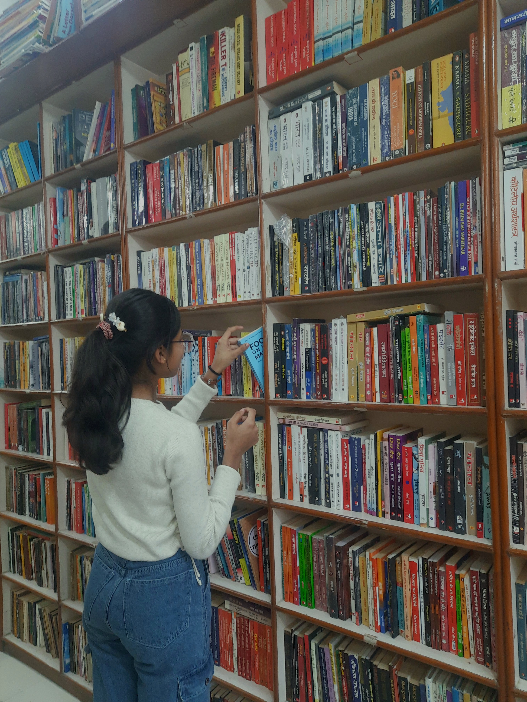

The Question After the Answer
On Asia, the Rigveda, Language, and the Trouble with Knowing
Read the editionAn independent monthly student publication
Beginning with the things that are easily missed, and following them into larger questions.
Read the latest editionOn Asia, the Rigveda, Language, and the Trouble with Knowing
Read the editionI was looking for readers. Somewhere along the way, I started finding them.
A second-hand copy of To Kill a Mockingbird leads to a larger reflection on literature, classrooms, disagreement, and the invisible experiences that shape how we read both books and people.
A classroom debate becomes a reflection on incomplete knowledge, independent thinking, and why learning begins not with certainty, but with the courage to question.
A reflection on marks, memorisation, originality, AI, and why safer answers often feel more rewarding than independent thinking.
The Student Observer is an independent monthly student publication where ordinary observations become the beginning of larger questions.
Each edition begins with something real—a classroom discussion, a book, a newspaper article, a place, a conversation, or a moment that refuses to disappear. From there, the writing follows the questions that emerge rather than the conclusions it expects to reach.
The subjects change from month to month. One edition may begin with literature and arrive at education. Another may begin with a classroom and end in public policy. A single observation may lead to history, economics, or human behaviour. The starting point remains the same; the direction is determined by inquiry.
Rather than offering definitive answers, The Student Observer invites readers to slow down, notice more carefully, and explore ideas across disciplines through careful observation and evidence-informed reflection.

People sometimes ask me how I decide what to write about.
The honest answer is that I don't always know.
Most editions begin with something that refuses to leave me alone. It might be a classroom discussion, a paragraph in a book, a newspaper article, or a conversation that continues long after it has ended. I find myself returning to it, reading a little more, asking another question, noticing another connection. Eventually, I realise I'm no longer simply thinking about it. I'm writing an essay.
Looking back at the editions published so far, I've noticed that they all began differently. Yet they seem to arrive at the same place: an attempt to understand something a little better than I did before.
That is all The Student Observer really is.
A place to follow questions wherever they lead.
I hope that, somewhere in these pages, you find a question worth carrying with you too.
— Aashi MalviyaEditor, The Student Observer